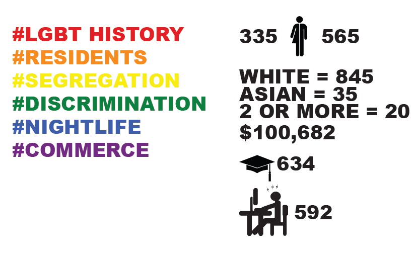

block#610[MANHATTAN]
This block is one of the most iconic hubs of LGBTQ activity in the world. Known as the birthplace of the struggle for LGBTQ rights in the United States, it attracts thousands of visitors every year. The aim of this exercise is to exemplify this locale, critically examine its demographic composition, and discern where local visitors come from.
Come out of the closet!History
This block is the birthplace of the struggle for LGBTQ rights in the United StatesThe first bars in which LGBTQs could socialize at started appearing in the mid-1800s. The reason for which may have coincided with the initiation of anti-LGBTQ legislation in some regions of the world. The foremost example of which was the British Empire, which started drafting laws addressing activities such as buggery and conflating them with other percieved immoral activities, such as witchcraft, bestiality, and other immentionable horrors (Human Rights Watch, 2008). While concentrations of bars started appearing in adjacent neighborhoods long before the Stonewall Inn was established, none have had as lasting an imprint on LGBTQ rights and life as the Stonewall.
While the main actors at the Stonewall Rebellion were transgender people of color, recent depictions of the events of 1969 featured objectively handsome gay white men as the main protagonists of these events. This was fairly indicative of the prevalence of white-washing in the gay and lesbian community, as shown in recent popular media, such as Queer As Folk, Will and Grace, and Modern Family (Al Shehhi, 2016). As such, I endeavored to examine this crucial block with a demographic lense rather than one relating to land uses, for example, or economic activity.
Images


Links
http://www.outgoingNYC.comhttp://www.thestonewallinnnyc.com/StonewallInnNYC/Welcome.html
http://www.theguardian.com/commentisfree/2010/jun/02/gay-lesbian-islamophobia
Statistics
Demographics
Land Use Summary
Sources
http://www.outgoingNYC.comhttps://www.hrw.org/report/2008/12/17/alien-legacy/origins-sodomy-laws-british-colonialism